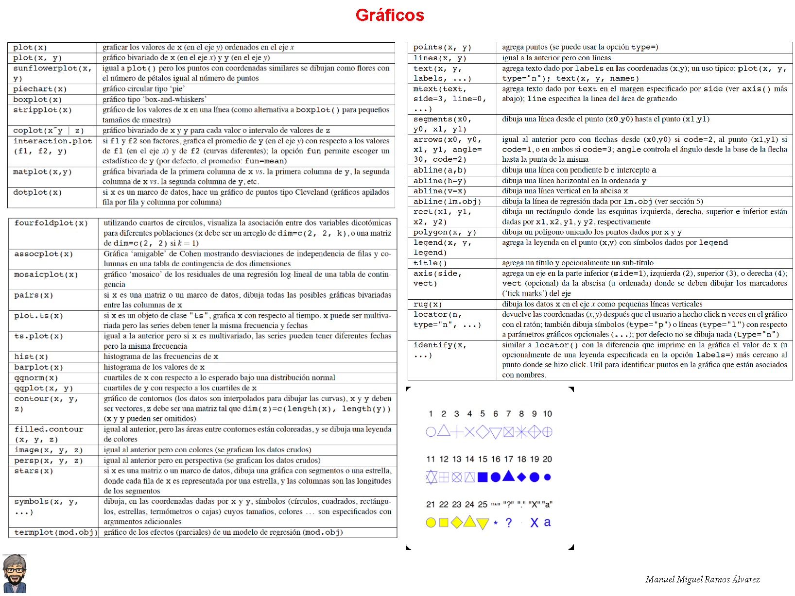
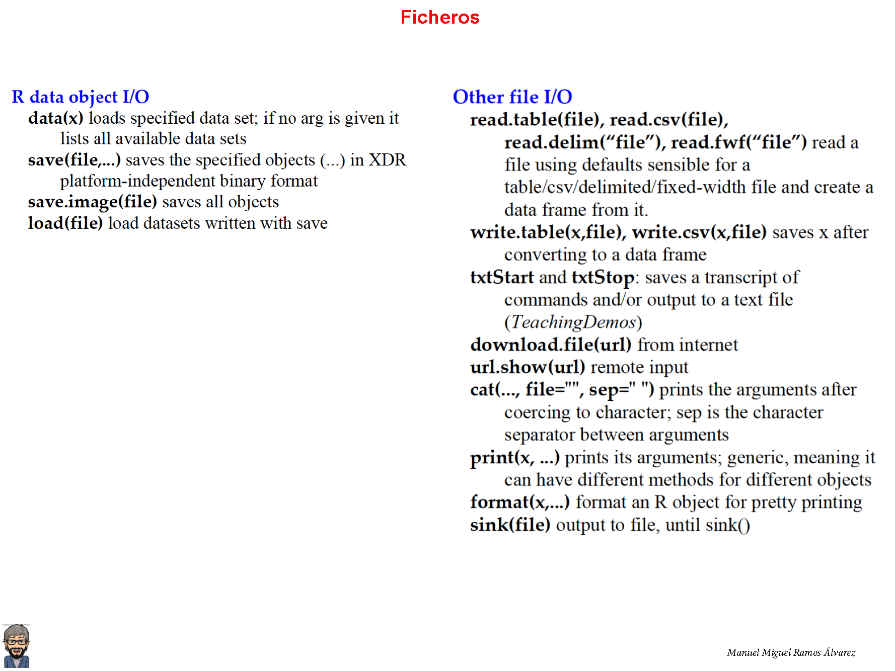

Bases computacionales de la Ciencia de Datos en Psicología
Recursos:
Wickham, H., & Grolemund, G. (2017). R for data science: Import, tidy, transform, visualize, and model data. Retrieved from: http://r4ds.had.co.nz; Versión pdf
Li Y. y Baron J. (2012). Behavioral Research Data Analysis with R. Springer
Preliminares: librerías
Code
library("tidyverse")
library("ds4psy")
library("data.table")
Cita: Ramos-Álvarez, M.M. (2017).Introducciòn a R. Recuperado 15 septiembre 2024, desde https://github.com/ManuMi68/StatMmRa/blob/main/IntroduceR.html
Ejemplo extraído de: Ramos-Álvarez, M.M. (2020). Bases Conceptuales del Análisis de Datos.
Imagine que realiza una investigación sobre la influencia de las técnicas de entrenamiento cognitivo basado en el programa Brain TrainingTM. En concreto usted y otros tres compañeros reciben entrenamiento de este tipo y después de tres sesiones obtienen las puntuaciones 9, 8, 7 y 8 respectivamente en una prueba de memoria.
Supongamos que aplicamos a otro grupo de 4 compañeros tres sesiones con un video-juego también de la misma compañía de Brain TrainingTM pero que no refuerza la memoria, y observamos que éstos obtienen 5, 5, 7 y 7 puntos respectivamente.
Finalmente, se replica en otro grupo de profesores el estudio con el video-juego alternativo y se encuentran las puntuaciones 8, 1, 8 y 7.
La ejemplificación del proceso de Análisis de Datos a partir de esta sencilla investigación experimental sería la siguiente:

Fichero de datos para comprobaciones: BrainTrain.csv
Fichero con el código del tutorial en R Studio: CienciaDatosMmRaCode.Rmd
1 Introducción
El objetivo de este módulo será aprender a establecer un esquema de trabajo óptimo (que no significa el mejor o el único) para estar en disposición de hacer Ciencia de Datos. De esta manera sentaríamos las bases para profundizar en los aspectos fundamentales a partir de los módulos posteriores. Para ello necesitamos una buena herramienta computacional de cálculo, versátil y asequible. Esto lo conseguiremos de la mano del programa R (https://www.r-project.org) y el entorno R Studio (https://rstudio.com). Una vez que tengamos instalados los dos programas y nos hayamos familiarizado con los mismos, crearemos nuestro propio marco de trabajo en R Studio mediante un fichero del tipo R Markdown. En este marco podremos aprender a establecer nuestro propio esquema de trabajo para empezar a hacer Ciencia de Datos, de la mano del supuesto de prácticas inspirado en la investigación con Brain Training.
1.1 Preparar la herramienta: entorno de trabajo a partir del programa R
Aunque no es necesario, dado que la instalación del entorno R es sencilla, en el siguiente enlace puedes consultar un video para la instalación en el entorno de Windows o bien en el entorno de Mac


1.2 Preparar nuestro esquema de trabajo: empezar a realizar análisis estadístico propio de Ciencia de Datos con R
Todos los fragmentos de código que se incluyen en el tutorial están preparados de tal manera que pueda copiarlos en el portapapeles para pegarlos en su entorno de trabajo R-Mardown y editarlos con sus propias notas. Recuerde que puede incluir notas comenzando la línea con el símbolo de hashtag(‘#’), toda vez que se definen fragmentos de código Insertando ‘chunks’.
A continuación se incluye un resumen sobre el entorno R-Studio, el cual puede imprimir expresamente a partir del documento: R Studio IDE Guía Rápida

También se incluye un resumen para aprender a manejar los aspectos fundamentales del programa R en general, el cual puede también imprimir expresamente a partir del documento: Base R Cheat Sheet 1


1) Las librerías (packages) son fundamentales.
R es algo así como un programa de análisis con potencial, pero a la que vamos añadiendo funcionalidad al indicarle las librerías específicas que nos servirán para llevar a cabo aquellos análisis específicos que nos interesan, o bien librerías que permiten manejar la información.
La fuente de referencia básica para encontrar las librerías será la página oficial del programa R (https://cloud.r-project.org/web/packages/). En cada sesión tenemos que recordar que hay que cargar las librerías de interés.
Además, si es la primera vez, hay que instalarlas en nuestro entorno de trabajo.
Empezamos a escribir en el código …
Code
# Únicamente la primera vez insalaremos las librerías
# (quitamos momentáneamente el hashtag y después lo volvemos a incluir)
# install.packages("Rcmdr")
# Y entonces la cargamos en memoria
library(Rcmdr)La librería R-Commander es una buena opción para iniciarse en R, puesto que a través de un sistema de menús permite generar los comandos de R para las opciones más representativas de análisis. En este momento sería interesante que explorase la misma, intentando ubicar aquello que es más importante en el análisis de los datos: Opciones de análisis como descripción de los datos, Regresión Lineal, ANOVA, representaciones gráficas, etc.
Una vez que la haya explorado, no olvide cerrar Rcmdr
Para familiarizarse con las Librerías y el Funcionamiento de R:
2) Preparamos la información a partir de los datos que nos interesan. Para ello codificamos los datos de Brain Tarining. Progresaremos desde el vector como unidad básica hacia los marcos (data.frame)
Code
# Ejemplo 1 .- Brain Training
# Desde el vector como unidad básica hacia los marcos
Memoria <- c(9,8,7,8,5,5,7,7,8,1,8,7)
Grupos <- c("BrainT", "BrainT", "BrainT", "BrainT", "VideoJ", "VideoJ", "VideoJ",
"VideoJ", "RepVideoJ", "RepVideoJ", "RepVideoJ", "RepVideoJ")
Grupos<-as.factor(Grupos)Hemos almacenado los datos de memoria en la variable denominada Memoria y la variable independiente en Grupos. En cualquier momento podemos explorar lo que contienen las variables a partir del panel derecho de R-Studio o sencillamente, de manera más interactiva, tecleando y ejecutando el nombre de dicha variable. Por ejemplo:
Code
# Para explorar el contenido de la variable de medida (o variable dependiente)
Memoria
[1] 9 8 7 8 5 5 7 7 8 1 8 7Code
# Para explorar el contenido de la variable independiente
Grupos
[1] BrainT BrainT BrainT BrainT VideoJ VideoJ VideoJ
[8] VideoJ RepVideoJ RepVideoJ RepVideoJ RepVideoJ
Levels: BrainT RepVideoJ VideoJR incluye funciones muy potentes para la creación de estructuras de información: rep, seq, paste, gl, expand.grid
Code
# Secuencias regulares
rep(3,4)
NivGrupos <- c("BrainT", "VideoJ", "RepVideoJ")
rep(NivGrupos,4)
rep(x=NivGrupos,each=4)
seq(2,10) #ó c(2:10)
seq(-2,-10,by=-1)
paste0(c("X"), 1:10, sep="")
gl(3, 4, label=NivGrupos) # Para generar factores con n niveles y k replicaciones
# Secuencias aleatorias, por ej. a partir de una distribución
# Normal de media 0 y desviación típica la unidad
rnorm(50,0,1)
[1] 3 3 3 3
[1] "BrainT" "VideoJ" "RepVideoJ" "BrainT" "VideoJ" "RepVideoJ"
[7] "BrainT" "VideoJ" "RepVideoJ" "BrainT" "VideoJ" "RepVideoJ"
[1] "BrainT" "BrainT" "BrainT" "BrainT" "VideoJ" "VideoJ"
[7] "VideoJ" "VideoJ" "RepVideoJ" "RepVideoJ" "RepVideoJ" "RepVideoJ"
[1] 2 3 4 5 6 7 8 9 10
[1] -2 -3 -4 -5 -6 -7 -8 -9 -10
[1] "X1" "X2" "X3" "X4" "X5" "X6" "X7" "X8" "X9" "X10"
[1] BrainT BrainT BrainT BrainT VideoJ VideoJ VideoJ
[8] VideoJ RepVideoJ RepVideoJ RepVideoJ RepVideoJ
Levels: BrainT VideoJ RepVideoJ
[1] -1.28923238 0.24265332 -1.15343552 0.33815339 -0.37332601 0.28420515
[7] 0.32209811 -0.04100283 0.54865588 -3.80279952 -0.96255168 1.10760709
[13] 0.14155005 0.64589396 0.44534382 -0.77490265 0.13066916 1.90134402
[19] -0.93949182 -0.98401545 -0.06150418 -0.88207018 0.18063997 0.21351363
[25] -0.54731367 -0.28419913 -0.82820948 -0.04427298 0.98757897 -1.54488157
[31] -1.06029637 -0.36143626 0.12278134 -0.94014650 -0.31750943 -1.39732235
[37] -1.45024268 0.05857252 -0.08426231 2.08530717 -0.88859974 -0.29812729
[43] 0.78546210 -0.13787946 -0.53530705 0.58575259 0.48961516 -0.27415013
[49] 0.41491189 1.25517010Explore con detenimiento todas las opciones. Habrá podido constatar que prácticamente todas las operaciones en el programa se realizan a través de funciones, las cuales se aplican sobre argumentos. Por ejemplo rep incluye argumentos como x, times, each, algunos de los cuales tienen valores por defecto: rep(x, times = 1, length.out = NA, each = 1).
Code
# analice los parámetros de algunas funciones
help(rep)
help(seq)Ahora volvemos sobre variables del tipo categórico, con niveles, como es usual en las variables independientes; es decir con lo que R define como factores:
Code
NivGrupos <- c("BrainT", "VideoJ", "RepVideoJ")
Grupos <- gl(3, 4, label=NivGrupos)
Grupos
[1] BrainT BrainT BrainT BrainT VideoJ VideoJ VideoJ
[8] VideoJ RepVideoJ RepVideoJ RepVideoJ RepVideoJ
Levels: BrainT VideoJ RepVideoJPodemos constatar que esta forma de crear la variable Grupos es preferible a la opción previa, aunque el resultado es prácticamente el mismo.
Y ahora podemos juntar todas las partes (vectores) de la información en una única estructura de datos: los marcos (data.frame), la estructura por excelencia en R.
Para entender esta estructura tan importante, la compararemos además con otras estructuras relevantes, ligeramente diferentes en función del objetivo que tiene dicha estructura de datos: las listas, estructuras temporales o tablas.
Code
# La estructura definitiva de datos: Marcos (data.frame)
BrainTrain <- data.frame(Grupos, Memoria)
BrainTrain
# Diferencia con las listas genéricas
list(Grupos, Memoria)
# Estructuras con codificación temporal
# Asigna momentos temporales a las medidas de Memoria,
# por ejemplo una medida al mes que empezaron el 2º mes del año 2008.
ts(Memoria, frequency = 12, start = c(2008, 2))
# Tablas de frecuencias (contingencia)
table(Memoria,exclude = NULL)
Grupos Memoria
1 BrainT 9
2 BrainT 8
3 BrainT 7
4 BrainT 8
5 VideoJ 5
6 VideoJ 5
7 VideoJ 7
8 VideoJ 7
9 RepVideoJ 8
10 RepVideoJ 1
11 RepVideoJ 8
12 RepVideoJ 7
[[1]]
[1] BrainT BrainT BrainT BrainT VideoJ VideoJ VideoJ
[8] VideoJ RepVideoJ RepVideoJ RepVideoJ RepVideoJ
Levels: BrainT VideoJ RepVideoJ
[[2]]
[1] 9 8 7 8 5 5 7 7 8 1 8 7
Jan Feb Mar Apr May Jun Jul Aug Sep Oct Nov Dec
2008 9 8 7 8 5 5 7 7 8 1 8
2009 7
Memoria
1 5 7 8 9
1 2 4 4 1 Para familiarizarse con las Estructuras y Tipos de Datos, así como la creación de estructuras:

3) Ahora estamos en disposición de modificar la estructura original de datos. Para ello incluiremos algunas funciones adicionales algo más complejas para creación de estructuras e incorporaremos una nueva variable a los datos de Brain Training.
Code
# Mas sobre estructuras de creación de información
expand.grid(a=c(1:2),sexo=c("Varon", "Mujer"),Grupos=NivGrupos)
NivGrupos <- c("BrainT", "VideoJ", "RepVideoJ")
Grupos <- gl(3, 4, label=NivGrupos)
Grupos
NivSex <- c("Varon", "Mujer")
Sex <- gl(2, 6, label=NivSex)
Sex
interaction(Grupos, Sex)
# Añadimos la variable Sexo a nuestro marco de datos
NivSex <- c("Varon", "Mujer")
BrainTrain$Sexo<-gl(2, 2, 12,label=NivSex)
BrainTrain
a sexo Grupos
1 1 Varon BrainT
2 2 Varon BrainT
3 1 Mujer BrainT
4 2 Mujer BrainT
5 1 Varon VideoJ
6 2 Varon VideoJ
7 1 Mujer VideoJ
8 2 Mujer VideoJ
9 1 Varon RepVideoJ
10 2 Varon RepVideoJ
11 1 Mujer RepVideoJ
12 2 Mujer RepVideoJ
[1] BrainT BrainT BrainT BrainT VideoJ VideoJ VideoJ
[8] VideoJ RepVideoJ RepVideoJ RepVideoJ RepVideoJ
Levels: BrainT VideoJ RepVideoJ
[1] Varon Varon Varon Varon Varon Varon Mujer Mujer Mujer Mujer Mujer Mujer
Levels: Varon Mujer
[1] BrainT.Varon BrainT.Varon BrainT.Varon BrainT.Varon
[5] VideoJ.Varon VideoJ.Varon VideoJ.Mujer VideoJ.Mujer
[9] RepVideoJ.Mujer RepVideoJ.Mujer RepVideoJ.Mujer RepVideoJ.Mujer
6 Levels: BrainT.Varon VideoJ.Varon RepVideoJ.Varon ... RepVideoJ.Mujer
Grupos Memoria Sexo
1 BrainT 9 Varon
2 BrainT 8 Varon
3 BrainT 7 Mujer
4 BrainT 8 Mujer
5 VideoJ 5 Varon
6 VideoJ 5 Varon
7 VideoJ 7 Mujer
8 VideoJ 7 Mujer
9 RepVideoJ 8 Varon
10 RepVideoJ 1 Varon
11 RepVideoJ 8 Mujer
12 RepVideoJ 7 MujerY podemos resumir la información, esto será fundamental para ayudarnos en la comprensión de los datos.
Code
# Con una única variable de agrupación
medias<-tapply(Memoria, Grupos, mean)
medias
# Caso general con más de una variable de agrupación
tapply(Memoria, list(Grupos,BrainTrain$Sexo), mean)
with(BrainTrain, by(Memoria, list(Grupos,Sexo), mean))
with(BrainTrain, aggregate(Memoria, by=list(Grupos,Sexo), mean))
BrainT VideoJ RepVideoJ
8 6 6
Varon Mujer
BrainT 8.5 7.5
VideoJ 5.0 7.0
RepVideoJ 4.5 7.5
: BrainT
: Varon
[1] 8.5
------------------------------------------------------------
: VideoJ
: Varon
[1] 5
------------------------------------------------------------
: RepVideoJ
: Varon
[1] 4.5
------------------------------------------------------------
: BrainT
: Mujer
[1] 7.5
------------------------------------------------------------
: VideoJ
: Mujer
[1] 7
------------------------------------------------------------
: RepVideoJ
: Mujer
[1] 7.5
Group.1 Group.2 x
1 BrainT Varon 8.5
2 VideoJ Varon 5.0
3 RepVideoJ Varon 4.5
4 BrainT Mujer 7.5
5 VideoJ Mujer 7.0
6 RepVideoJ Mujer 7.5Es importante aprender a crear funciones propias, de cara a sistematizar las operaciones que prevé sobre los datos. En un sencillo ejemplo, vamos a definir una función para estimar el Error Típico de la Media (Varianza de los datos dividida por la raíz cuadrada del tamaño muestral), una medida de variabilidad o dispersión bastante recomendable.
Code
ETM <- function(x) sqrt(var(x,na.rm=TRUE)/length(na.omit(x)))
# La aplicamos sobre nuestros datos
ETM(Memoria)
# Y mejoramos un poco la legibilidad del resultado
ETM <- function(x) round(sqrt(var(x,na.rm=TRUE)/length(na.omit(x))),4)
ETM(Memoria)
[1] 0.6195469
[1] 0.6195Para familiarizarse con las Funciones:

Para familiarizarse con el Resumen de la Información a partir de Funciones Estadísticas:
4) Los Modelos estadísticos nos ayudarán a ir un paso más allá gracias a la explicación de los datos.
Volviendo a la investigación de Brain Training, los datos medidos para la Memoria se explicarían en este caso a partir de la variable Grupo de entrenamiento. Este es el modelo estadístico más elemental, un modelo lineal.
Code
# Modelos Estadísticos
modelo <- as.formula(Memoria ~ Grupos)
ModLin<-lm(modelo,data = BrainTrain)
# Para obtener un resumen del modelo
summary(ModLin)
Call:
lm(formula = modelo, data = BrainTrain)
Residuals:
Min 1Q Median 3Q Max
-5.0 -1.0 0.5 1.0 2.0
Coefficients:
Estimate Std. Error t value Pr(>|t|)
(Intercept) 8.000 1.054 7.589 3.36e-05 ***
GruposVideoJ -2.000 1.491 -1.342 0.213
GruposRepVideoJ -2.000 1.491 -1.342 0.213
---
Signif. codes: 0 '***' 0.001 '**' 0.01 '*' 0.05 '.' 0.1 ' ' 1
Residual standard error: 2.108 on 9 degrees of freedom
Multiple R-squared: 0.2105, Adjusted R-squared: 0.03509
F-statistic: 1.2 on 2 and 9 DF, p-value: 0.3452Las estructuras de agrupación tipo apply entrañan cierta complejidad. Es conveniente entender la lógica general de las mismas.
Realmente algunas de las estructuras de datos incluyen de manera más o menos explícita un resumen de la información, tal es el caso de las tablas de contingencias. Dichas tablas se pueden además obtener a partir de modelos.
Code
xtabs(Memoria~Grupos+Sexo,data=BrainTrain)
BrainTrainT<-ftable(xtabs(Memoria~Grupos+Sexo,data=BrainTrain))
BrainTrainT
# En realidad es como:
aggregate(Memoria ~ Grupos + Sexo, data = BrainTrain, FUN = sum)
# Podemos resumir aún más a través de la obtención de marginales
rowSums(BrainTrainT)
colSums(BrainTrainT)
Sexo
Grupos Varon Mujer
BrainT 17 15
VideoJ 10 14
RepVideoJ 9 15
Sexo Varon Mujer
Grupos
BrainT 17 15
VideoJ 10 14
RepVideoJ 9 15
Grupos Sexo Memoria
1 BrainT Varon 17
2 VideoJ Varon 10
3 RepVideoJ Varon 9
4 BrainT Mujer 15
5 VideoJ Mujer 14
6 RepVideoJ Mujer 15
[1] 32 24 24
[1] 36 44Para familiarizarse con la familia Apply:

Para terminar este apartado repasamos, de manera comparativa, los tipos de datos
Code
# Mas sobre tipos de Datos
typeof(Memoria)
typeof(medias[1])
typeof(anova(ModLin)$Df[1])
typeof(NivGrupos)
typeof(Grupos)
typeof(BrainTrain$Sexo)
[1] "double"
[1] "double"
[1] "integer"
[1] "character"
[1] "integer"
[1] "integer"Para familiarizarse con los Modelos Estadísticos:

5) Otro hito importante en la comprensión de los datos vendrá de la mano de la exploración de los datos a través de la realización de representaciones gráficas
Este es un mundo muy rico y complejo en el entorno de R. Por ahora vamos a pedir al programa que realice algunas representaciones destacadas de nuestros datos de Brain Training.
Code
# Los puntos de datos en la medida
plot(BrainTrain$Memoria)
# Para los puntos de datos en función de la variable de agrupación
with(BrainTrain, dotchart(Memoria,groups = Grupos))
# Para obtener una representación a partir del resumen de los datos
with(BrainTrain, plot(Grupos,Memoria))
# Que en este caso es equivalente a un Gráfico del tipo Box Plot a partir del modelo
boxplot(modelo)
# Al cual podemos añadir los valores de la media aritmética
points(medias,col="red",pch=18,cex=2)
En este punto sería interesante observar las diferencias entre las diferentes representaciones gráficas. Realmente la función plot es genérica, mientras que la función boxplot es más específica. Si nuestra investigación incluyese más bien la explicación de una medida a partir de una variable explicativa de carácter cuantitativo (como en el caso de Regresión Lineal), la función genérica habría invocado a un gráfico de dispersión.
Code
# Incorporamos ahora puntuaciones de Atención a nuestro entorno de trabajo
Atencion <- c(10,7,6,7,3,4,6,7,9,2,9,8)
Nuevomodelo<-as.formula(BrainTrain$Memoria ~ Atencion)
# Y constatamos que la función plot invoca a un diagrama de dispersión
plot(Nuevomodelo,xlab="Memoria", ylab = "Atención", main="Estudio de Brain Training")
# Al cual podemos incorporar la Linea de Regresión Lineal
abline(lm(Nuevomodelo),col="red")
# Y la función de pérdida
lines(predict(loess(Nuevomodelo)), col='blue')La comparación de las dos funciones pone de manifiesto que el modelo Lineal supone una representación mejor de nuestros datos, en comparación a la función de pérdida. Las funciones de pérdida a veces nos aportan pistas respectos a funciones curvilíneas (no lineales) más complejas, e incluso pueden convertirse en la opción más razonable.
Por otro lado, habrá tenido ocasión de familiarizarse con algunos de los parámetros más destacados para el manejo de las representaciones gráficas: colores, tipo de símbolo y su tamaño, leyendas de los ejes, entre otras.
Para familiarizarse con los Gráficos para Exploración de Datos:

6) Terminamos esta introducción con los ficheros de datos, la manera de almacenar la información
Code
#Fichero de datos
write.csv2(BrainTrain, file="ResEjem2.csv", row.names = FALSE)
# Resultados del análisis
capture.output(anova(ModLin), file="ResEjem1.txt",append=T)
# Gráficos
pdf("ResBrainT.pdf")
boxplot(modelo)
points(medias,col="red",pch=18,cex=2)
dev.off()
# Mejor, organizar resultados mediante listas y almacenar datos,
# resultados y funciones específicas
# Creamos una lista Vacía y en diferentes campos de la misma
# almacenamos los diferentes resultados
ResAn<-list()
ResAn$Medias<-medias
ResAn$Resumen<-summary(ModLin)
ResAn$ANOVA<-anova(ModLin)
ResAn
capture.output(ResAn, file="ResEjem.txt",append=T)
ResAn$ETM<-tapply(Memoria, Grupos, ETM)
save(BrainTrain, ETM, ResAn, file = "BrainTrain.RData")
quartz_off_screen
2
$Medias
BrainT VideoJ RepVideoJ
8 6 6
$Resumen
Call:
lm(formula = modelo, data = BrainTrain)
Residuals:
Min 1Q Median 3Q Max
-5.0 -1.0 0.5 1.0 2.0
Coefficients:
Estimate Std. Error t value Pr(>|t|)
(Intercept) 8.000 1.054 7.589 3.36e-05 ***
GruposVideoJ -2.000 1.491 -1.342 0.213
GruposRepVideoJ -2.000 1.491 -1.342 0.213
---
Signif. codes: 0 '***' 0.001 '**' 0.01 '*' 0.05 '.' 0.1 ' ' 1
Residual standard error: 2.108 on 9 degrees of freedom
Multiple R-squared: 0.2105, Adjusted R-squared: 0.03509
F-statistic: 1.2 on 2 and 9 DF, p-value: 0.3452
$ANOVA
Analysis of Variance Table
Response: Memoria
Df Sum Sq Mean Sq F value Pr(>F)
Grupos 2 10.667 5.3333 1.2 0.3452
Residuals 9 40.000 4.4444 Una vez que tiene almacenados los objetos, todo lo que tendrá que hacer en el futuro es cargar el fichero. Para ello podría probar a borrar toda la información cargada en memoria de trabajo y cargar los objetos a partir del siguiente comando:
Code
load("BrainTrain.RData")Para familiarizarse con los Ficheros:

Si desea iniciar una sesión de trabajo a partir únicamente de los datos, lo recomendable sería:
Code
PathDesign="/Volumes/RMmRa21/Cursos/Doctorado 24/" # Sustituir el trayecto por el suyo propio
NmFich="BrainTrain.csv";
NmFich<-paste0(PathDesign,NmFich);
BrainTrain <- read.csv2(NmFich, header=TRUE)
# O bien desde un acceso a internet:
BrainTrain <- read.csv2(
"https://drive.google.com/uc?export=download&id=1hL1JDVyR8XomOuGsO6UxHUmWJP7dO4Yd",
header=TRUE)1.3 Recodificación de los datos
El procesamiento de los datos iniciales a veces conlleva no sólo la codificación, tal y como acabamos de estudiar, sino la recodificación de información, de manera que se obtiene una nueva variable a partir de la transformación de los datos originales de la investigación. Por ejemplo, supongamos que la variable Ocio presenta algunas peculiaridades de manera que preferimos trabajar con sus valores inversos.
Otro ejemplo podría venir dado a la hora de combinar (o fusionar) diversas variables en una, supongamos el Sexo y Nivel de estudios.
Finalmente, otra posibilidad relevante puede venir dada más bien porque no deseemos analizar los datos al completo sino únicamente una parte de la información, de manera que seleccionaríamos (filtramos) por ejemplo únicamente los datos del sexo masculino y descartamos el resto.
Recogemos a continuación las funciones avanzadas que nos permitirán realizar las modificaciones de manera mucho más intuitiva que aquellas que hemos abordado previamente para el mismo objetivo, así como la equivalencia con las mismas
- arrange. Organizar casos (rows)
- filter/slice. Seleccionar casos (rows) a través de condicionales lógicos y mediante número
- select. Seleccionar y reorganizar variables (columns)
- mutate/transmute. Computar variables (columns) y añadirlas a la estructura de datos
- summarise. Colapsar múltiples valores de una variable (rows of a column) en una nueva variable
Fichero de datos del supuesto: BrainTrain.csv
Code
# Previamente cargamos las librerías necesarias y el fichero de datos
library("tidyverse")
library("ds4psy")
# Cargamos el fichero de datos, supuesto de BrainTraining
PathDesign="/Volumes/RMmRa21/Cursos/Doctorado 24/" # Sustituir el trayecto por el suyo propio
NmFich="BrainTrain.csv";
NmFich<-paste0(PathDesign,NmFich);
BrainTrain <- read.csv2(NmFich, header=TRUE)
BrainTrain %>%
arrange(desc(Memoria))
BrainTrain %>% filter(Grupos == "BrainT" )
BrainTrain %>% filter(Memoria > 5)
BrainTrain %>% select(Grupos)
BrainTrain %>% select(2)
# Incorporamos ahora puntuaciones de Atención al marco de trabajo
BrainTrainMas <- BrainTrain %>% mutate(Atencion = c(10,7,6,7,3,4,6,7,9,2,9,8))
# Otro ejemplo: división por la Mediana
BrainTrainMas %>% mutate(AtencionDivide=as.factor(Atencion>=median(Atencion)))
BrainTrain %>%
summarise(# Descriptives of SaludPercibida:
n_Mem = sum(!is.na(Memoria)),
mn_Mem = mean(Memoria, na.rm = TRUE),
md_Mem=median(Memoria, na.rm = TRUE),
sd_Mem = sd(Memoria, na.rm = TRUE),
# Counts of character variables:
n = n(),
n_dif = n_distinct(Memoria)
)
Grupos Memoria
1 BrainT 9
2 BrainT 8
3 BrainT 8
4 RepVideoJ 8
5 RepVideoJ 8
6 BrainT 7
7 VideoJ 7
8 VideoJ 7
9 RepVideoJ 7
10 VideoJ 5
11 VideoJ 5
12 RepVideoJ 1
Grupos Memoria
1 BrainT 9
2 BrainT 8
3 BrainT 7
4 BrainT 8
Grupos Memoria
1 BrainT 9
2 BrainT 8
3 BrainT 7
4 BrainT 8
5 VideoJ 7
6 VideoJ 7
7 RepVideoJ 8
8 RepVideoJ 8
9 RepVideoJ 7
Grupos
1 BrainT
2 BrainT
3 BrainT
4 BrainT
5 VideoJ
6 VideoJ
7 VideoJ
8 VideoJ
9 RepVideoJ
10 RepVideoJ
11 RepVideoJ
12 RepVideoJ
Memoria
1 9
2 8
3 7
4 8
5 5
6 5
7 7
8 7
9 8
10 1
11 8
12 7
Grupos Memoria Atencion AtencionDivide
1 BrainT 9 10 TRUE
2 BrainT 8 7 TRUE
3 BrainT 7 6 FALSE
4 BrainT 8 7 TRUE
5 VideoJ 5 3 FALSE
6 VideoJ 5 4 FALSE
7 VideoJ 7 6 FALSE
8 VideoJ 7 7 TRUE
9 RepVideoJ 8 9 TRUE
10 RepVideoJ 1 2 FALSE
11 RepVideoJ 8 9 TRUE
12 RepVideoJ 7 8 TRUE
n_Mem mn_Mem md_Mem sd_Mem n n_dif
1 12 6.666667 7 2.146173 12 5Si desea profundizar en el manejo del entorno R Studio, los siguientes documentos le resultarán de gran ayuda:
2 Procesamiento de datos en el contexto de ANOVA
Ejemplo extraído de: Maxwell, S.E. & Delaney, H.D. (2004, 2Ed). Designing Experiments and Analyzing Data.
We will once again use the hypothetical McCarthy data originally shown in Table 11.5 to motivate our presentation. For convenience, these data are repeated in Table 15.1.
The data show that 12 subjects have been observed in each of 4 conditions. To make the example easier to discuss, let’s suppose that the 12 subjects are children who have been observed at 30, 36, 42, and 48 months of age. In each case, the dependent variable is the child’s age-normed general cognitive score on the McCarthy Scales of Children’s Abilities. Although the test is normed so that the mean score is independent of age for the general population, our 12 children may come from a population in which cognitive abilities are either growing more rapidly or less rapidly than average.
Fichero de datos: http://www4.ujaen.es/~mramos/ADMmRa/MaxwelDelaney04Table15_1.csv
Preparamos los Datos y las librerías necesarias
Code
# La que es específica del ANOVA
CarpAct<-"http://www4.ujaen.es/~mramos/ADMmRa/"
FileAct<-"FuncApoyoADMmRa.R"
source(paste0(CarpAct,FileAct))
# install.packages(c("MBESS", "metafor", "plyr","data.table","car","effsize",
# "compute.es","bootES","pwr","ez","coin","psych","lsmeans",
# "lsr","Rmisc","gplots","ggplot2","sm","Hmisc","forestplot",
# "mnormt","gmodels","nlme","lme4","lmerTest"))
# Expresamente para este módulo:
library(nlme);library(lme4);library(lmerTest)
library(data.table);
library(gmodels);library(mnormt)
# El fichero de datos para el supuesto de prácticas:
CarpAct<-"http://www4.ujaen.es/~mramos/ADMmRa/"
FileAct<-"MaxwelDelaney04Table15_1.csv"
DataRaw<-read.table(paste0(CarpAct,FileAct),header=TRUE,sep=";",dec=",")
DataDT<-data.table(DataRaw)El fichero de datos hay que recodificarlo para poder abordarlo de manera adecuada, según el formato extendido Los contrapuestos gather/pivot_longer vs spread/pivot_wider para abordar el trasvase entre formato a lo ancho y a lo largo (wide vs long), especialmente relevante en los diseños de medidas repetidas (diseños Intra). Se trata de comandos que mejoran el comando tradicional reshape
Code
NTTBetw=DataDT[,.N]
# Si no existía, hay que añadir previamente la codificación de los Sujetos
DataDT[,Subj:=factor(1:NTTBetw)]
DataDTIS<-DataDT %>%
.[,Subj:=factor(1:NTTBetw)] %>%
pivot_longer(cols = `X30`:`X48`,
names_to = "TimeCat", values_to = "DV") %>%
mutate(TimeCat = factor(TimeCat)) %>%
mutate(TimeC=rep(c(30,36,42,48), each = NTTBetw)) %>%
data.table()
# Lo contrario: Make long data wider
# Distribuir los valores de 1 variable en varias columnas
DataDTISRaw<- DataDTIS %>%
pivot_wider(names_from = "TimeCat",
values_from = "DV") %>%
select(.,-TimeC)Tenga presente los siguientes comandos:
* separate. 1 variable en los valores de 2 variables * unite. Unir los valores de 2 variables en 1 variable * gather/pivot_longer. Make wide data longer (reunir valores distribuidos en varias columnas en 1 variable) * spread/pivot_wider. Make long data wider (distribuir los valores de 1 variable en varias columnas) * gather,separate,spread. Para diseños multivariados de medidas repetidas
3 Procesamiento de datos en el contexto de Regresión
Code
# 0.B) Carga Librerías
library(data.table)
library(lavaan)
library(semTools)
library(lavaanPlot)
library(stargazer)
library(psych)
library(psychometric)
library(nortest)
source(gzcon(url("https://github.com/ManuMi68/StatMmRa/raw/main/FuncADMmRaIII.R")))
# Desde carpeta propia, de manera alternativa:
ElDir="/Volumes/RMmRa21/Cursos/Doctorado 24/"
# source(paste0(ElDir,"FuncADMmRaIII.R")) # Incluye todas las funciones específicas propias de Análisis general y de psicometría
# Activa filtrado de items
Filtro=T
PathData<-"/Volumes/RMmRa21/Cursos/Doctorado 24/Data/"
EscalaL<-c("1 Nada","2 Algo","3 Medio","4 Bastante","5 Totalmente")
PathDesign="/Volumes/RMmRa21/Cursos/Doctorado 24/" # Sustituir el trayecto por el suyo propio
NmFich="DatosMarruecos2_Curso.csv"
NmFich<-paste0(PathData,NmFich);
Datos <- read.csv2(NmFich, header=TRUE)
# O bien desde un acceso a internet:
Datos <- read.csv2(
"https://drive.google.com/uc?export=download&id=1Hgh62fkk2NNod7Vfnm6IC8Rx5M4WgXKv",
header=TRUE)
Datos<- Datos %>%
mutate(Sexo=factor(Sexo),
Niv_Educativo =factor(Niv_Educativo,levels=c(1:6),labels=c("1_ESO", "2_ESO", "3_ESO","4_ESO","5_1_Bachillerato", "6_2_Bachillerato")),
Escuela =factor(Escuela,levels=c(1:3),labels=c("1_Pública", "2_Privada", "3_Rural")),
Donde_Vive =factor(Donde_Vive,levels=c(1:2),labels=c("1_Ciudad", "2_Pueblo")),
Ciudad_concreta=factor(Ciudad_concreta,levels=c(1),labels=c("1_Fes")),
No_Hermanos =factor(No_Hermanos,levels = c(0:5),
labels=c("1_Ninguno", "2_1 Hermano", "3_2 Hermanos", "4_3 Hermanos", "5_4 Hermanos", "6_5 o mas Hermanos")),
Con_Quien_Vive =factor(Con_Quien_Vive,levels=c(1:4),labels=c("1_Padres", "2_Padre","3_Madre","4_Otros")),
Orden_Entre_Herm=factor(Orden_Entre_Herm,levels=c(1:4),labels=c("1_Primero", "2_Mediano","3_Último","4_Otro")),
Niv_Educ_Padre =factor(Niv_Educ_Padre,levels=c(1:5),
labels=c("1_Sin estudios", "2_Primaria", "3_Secundaria", "4_Bachillerato" ,"5_Universitarios")),
Niv_Educ_Madre =factor(Niv_Educ_Madre,levels=c(1:5),
labels=c("1_Sin estudios", "2_Primaria", "3_Secundaria", "4_Bachillerato" ,"5_Universitarios")),
Trabajo_Padre =factor(Trabajo_Padre,levels=c(1:6),
labels=c("1_Sin trabajo", "2_Empleado", "3_Agricultura", "4_Funcionario", "5_Autóonomo","6_Otro")),
Trabajo_Madre =factor(Trabajo_Madre,levels=c(1:6),
labels=c("1_Sin trabajo", "2_Empleado", "3_Agricultura", "4_Funcionario", "5_Autóonomo","6_Otro"))
)
Tasks<-c("RAVEN","MSPSS","QALT","WLEIS","Autoestima","BAR_ON","Self_Concept","Alexithimia","Motivation","SWLS","SARASON","Beck")
NmFichero2<-"EscalasMarruecosTks2.csv";
Datos2<-read.table(paste0(PathData,NmFichero2),header=TRUE, na.strings="NA", dec=",", strip.white=TRUE,sep=";")
DT<-data.table(Datos)
LosNm<-names(DT)
DTNm<-data.table(Datos2)
# Irems negativos si los hubiera
#Incrementa 1 en Beck
LasVar<-DT[,grep(Tasks[12],LosNm,value=F)]
NmSel<-names(DT[,LasVar,with=F])
DT[, (NmSel) := DT[,LasVar,with=F]+1]
# Seleccionamos únicamente la escala MSPSS (Task 2) para ilustrar el procesamiento previo
# Define la estructura
Factores<-list()
if (Filtro) Factores[[2]]<-list( c(1, 2, 5, 10), c(6, 9), c(3, 4, 8, 11)) #MSPSS
if (!Filtro) Factores[[2]]<-list( c(1, 2, 5, 10), c(6, 7, 9, 12), c(3, 4, 8, 11)) #MSPSS
NFact<-sapply(Factores,length)
Escalas<-list()
Escalas[[1]]<- c("No","Si")
Escalas[[2]]<- c("Nunca", "A veces", "A menudo", "Frecuentemente", "Siempre")
Escalas[[3]]<- c("Totalmente desacuerdo", "Desacuerdo", "Acuerdo", "Totalmente acuerdo")
Escalas[[4]]<- c("Muy deficiente", "Deficiente", "Notable", "Sobresaliente")
Escalas[[5]]<- c("Seguro No", "Probablemente No", "Probablemente Si", "Seguro Si")
Escalas[[6]]<- c("Nada probable", "Poco probable", "Algo probable", "Totalmente probable")
Escalas[[7]]<- c("Totalmente desacuerdo", "Desacuerdo", "Relativamente desacuerdo", "Relativamente de acuerdo", "Acuerdo", "Totalmente acuerdo")
Escalas[[8]]<- c("Nada", "En gran medida", "Mucho", "En extremo")
Escalas[[9]]<-paste0(Escalas[[4]],"/",Escalas[[5]],sep="/",Escalas[[6]])
Demog<-c("SUJETO", "Fecha_Entrevista", "Fecha_Nacimiento", "Sexo", "Niv_Educativo", "Escuela", "Donde_Vive",
"Ciudad_concreta", "Nota_Media", "Con_Quien_Vive", "No_Hermanos", "Orden_Entre_Herm", "Edad_Padre", "Edad_Madre",
"Niv_Educ_Padre", "Niv_Educ_Madre", "Trabajo_Padre", "Trabajo_Madre")
# Estructuras de Validez
EstrVal<-list()
Task2<-c(Tasks,Demog[9])
# A) Inteligencia Emocional
# BAR-ON: Raven, WLEIS, Alexitimia
# WLEIS: BarOn, Autoestima de Rosenberg
# TAS-20 WLEIS
# B) Autoconcepto
# Autoestima de Rosenberg: Auto-concepto (Self_Concept), Ansiedad ante los exámenes (SARASON), BDI-II Beck
# Auto-concepto de Brookover: Nota media, Autoestima de Rosenberg, Raven
# Motivación de logro de Khalifa: WLEIS
# C) Bienestar
# Ansiedad ante los exámenes (TASC ó SARASON?): Raven, Nota media
# SWLS: Rosenberg
# BDI-II: Ansiedad ante los exámenes, Auto-estima de Rosenberg
# D) Bloque solo: MSPSS
# MSPSS: Ansiedad ante los exámenes (TASC), BDI-II
# e.g. "SARASON" "Beck" servirán para la validación de MSPSS:
Ts<-2; Task2[Ts]; EstrVal[[Ts]]<-c(11,12); Task2[EstrVal[[Ts]]]
#9 será la escala combinación de los otros 3
vect<-c(0,1,2,3,3,2,9,3,3,7,3,3)
ResIAll<-list()
for (Tks in c(2)) {
# Aquí irían las escalas entre 2 y 12: for (Tkk in c(2:12))
ResIAll[[Tks]]<-ProcItAlt19(Tk=Tks,Tasks = Tasks,LosNm = LosNm,DTNm = DTNm,EscalaL = Escalas[[vect[Tks]]],Factores[[Tks]])
}
ResNewAll<-data.table(NA)
for (Tkk in c(2)) {
# Aquí irían las escalas entre 2 y 12: for (Tkk in c(2:12))
ModLav<-list()
ModLavT<-list()
NumF<-ResIAll[[Tkk]]$NFac
if (NumF>1) FactoresT<-c(paste0(ResIAll[[Tkk]]$Task,".F",1:ResIAll[[Tkk]]$NFac))
NmTT<-paste0(ResIAll[[Tkk]]$Task,"TT")
Sel<-as.vector(DT[,grep(Tasks[Tkk],names(DT),value=F)])
ResfinalFi<-DT[,Sel,with=F]
DTOmit<-data.table(na.omit(ResfinalFi))
ResNewF<-data.table(rowSums(DT[,grep(ResIAll[[Tkk]]$Task,names(DT),value=F),with=F],na.rm = F))
ModLavT<-paste0(ModLavT, "\n", paste0(NmTT," =~ ",paste0(as.vector(DT[,grep(Tasks[Tkk],names(DT),value=T)]),collapse = " + ")))
if (NumF>1) {
for (iF in c(1:ResIAll[[Tkk]]$NFac)) {
Nmm<-FactoresT[iF]
SelnM<-paste0(ResIAll[[Tkk]]$Task,"_",ResIAll[[Tkk]]$Factor[[iF]])
ModLav<-paste0(ModLav, "\n", paste0(Nmm," =~ ",paste0(SelnM,collapse = " + ")))
ResNew<-data.table(rowSums(DT[,grep(ResIAll[[Tkk]]$Task,names(DT),value=F),with=F][,SelnM,with=F],na.rm = F))
names(ResNew)<-Nmm
ResNewF<-data.table(ResNewF,ResNew)
}
ModLavT<-paste0(ModLavT,ModLav)
}
if (NumF<=1) ModLav<-ModLavT
names(ResNewF)<-c(paste0(ResIAll[[Tkk]]$Task,".TT"),names(ResNewF)[-1])
ResNewAll<-data.table(ResNewAll,ResNewF)
ResIAll[[Tkk]]$ModLav<-ModLav
ResIAll[[Tkk]]$ModLavT<-ModLavT
}
ResNewAll[,V1:=NULL]
#----------------------------
# 1) Análisis items: IDn & IFiab & Omega
#-----------------------------
ResIAllf<-ResIAll
#
SelDn<-0.25
# MSPSS
for (Tkk in 2) {
print(ResIAll[[Tkk]]$Task)
RR<-data.table(DT[,grep(ResIAll[[Tkk]]$Task,names(DT)),with=F])
if (Tkk ==2) { IDnF<- IDnMM_19(RR,Number=0,Ordin=0,Categ=c(1:length(RR)))}
if (Tkk !=2) { IDnF<- IDnMM_19(RR,Number=0,Ordin=c(1:length(RR)),Categ=0)}
IDnF<-IDnF[order(Corr.IDn)]
om.results <-psych::omega(RR,nfactors=ResIAll[[Tkk]]$NFac)
psych::omega.diagram(om.results,cex=5)
alpha.results<-psych::alpha(RR)
print(alpha.results$alpha.drop)
print(IDnF)
Sobrantes<-IDnF[Corr.IDn<=SelDn,Names]
print(data.table(Sobrantes))
}
# Eliminar: MSPSS_7 MSPSS_12 según IDn
# WLEIS_13 y Beck_21 según Omega porque quedan fuera de las mínimnos recomendados para las cargas facrtorales
ItElim <-c('MSPSS_7', 'MSPSS_12', 'WLEIS_13', 'Beck_21')
DdItElim<--grep(paste0(ItElim,collapse = '|'), names(DT)) # 25 30 43 72
DTf<-DT[,..DdItElim]
ResDT<-data.table(DTf,ResNewAll)
LosNm2<-names(ResDT)
#----------------------------
# 2) Cálculos muestrales y descriptivos
#-----------------------------
# Eejmplos puntuales:
Tkk=2 # Task 2: MSPSS
RR<-data.table(ResNewAll[,grep(ResIAll[[Tkk]]$Task,names(ResNewAll)),with=F])
RR[, sapply(.SD, function(x) list(mean=round(mean(x,na.rm = T), 2)))]
sort(round(prop.table(table(DTf$Niv_Educativo,exclude = NULL))*100,1),decreasing = T)
summary(Datos$Edad_Padre)
nrow((Datos))
nrow((DT))
DT[,]
nrow(DT)
summary(DT[,LasVar,with=F])
EdadHastaHoy(Datos$Fecha_Nacimiento)
#Definitivo
ByFreqf<-lapply(DTf[,c(4,5)],function(x) cbind(Freq=table(x,exclude = NULL),
Perc=round(prop.table(table(x,exclude = NULL))*100,1)))
ByFreqf
paste0("N = ", nrow(DT))
EdadHastaHoy(DTf$Fecha_Nacimiento)
DTRes<-cbind(Var=names(ResNewAll),ResNewAll[, rbindlist(lapply(.SD, stats_MM))])
DTRes
[1] "MSPSS"
[1] "SARASON" "Beck"
[1] "MSPSS"
raw_alpha std.alpha G6(smc) average_r S/N alpha se var.r
MSPSS_1 0.5751963 0.5768945 0.6096010 0.1102826 1.363477 0.01769606 0.01594277
MSPSS_2 0.5607874 0.5652279 0.6008965 0.1056951 1.300055 0.01822239 0.01638499
MSPSS_3 0.5605466 0.5721814 0.6032246 0.1084049 1.337439 0.01829302 0.01556179
MSPSS_4 0.5628197 0.5737988 0.6071582 0.1090455 1.346309 0.01820535 0.01631060
MSPSS_5 0.5792158 0.5834966 0.6144584 0.1129705 1.400941 0.01750811 0.01562545
MSPSS_6 0.5707283 0.5820719 0.6115333 0.1123847 1.392756 0.01777384 0.01533474
MSPSS_7 0.5881541 0.5962201 0.6217881 0.1183493 1.476597 0.01701106 0.01415213
MSPSS_8 0.5690729 0.5824778 0.6151173 0.1125513 1.395082 0.01795628 0.01686584
MSPSS_9 0.5652610 0.5743477 0.6061240 0.1092638 1.349335 0.01802964 0.01626204
MSPSS_10 0.5680111 0.5717754 0.6042548 0.1082448 1.335223 0.01791214 0.01582208
MSPSS_11 0.5658721 0.5764197 0.6083689 0.1100919 1.360827 0.01806898 0.01602149
MSPSS_12 0.5870689 0.5944849 0.6200783 0.1175998 1.466000 0.01704296 0.01385579
med.r
MSPSS_1 0.06139282
MSPSS_2 0.05879096
MSPSS_3 0.06139282
MSPSS_4 0.06139282
MSPSS_5 0.08370502
MSPSS_6 0.09127190
MSPSS_7 0.08674904
MSPSS_8 0.08462270
MSPSS_9 0.08462270
MSPSS_10 0.08370502
MSPSS_11 0.08370502
MSPSS_12 0.09127190
Names Corr.IDn Corr.Pearson
<char> <num> <num>
1: MSPSS_7 0.2225593 0.1765136
2: MSPSS_12 0.2364982 0.1867519
3: MSPSS_5 0.3396437 0.2129515
4: MSPSS_6 0.3416919 0.2580873
5: MSPSS_11 0.3465724 0.2744019
6: MSPSS_10 0.3635350 0.2663250
7: MSPSS_4 0.3642919 0.2904242
8: MSPSS_3 0.3715125 0.2941485
9: MSPSS_2 0.3821813 0.3012515
10: MSPSS_8 0.3867810 0.2702582
11: MSPSS_9 0.4272301 0.2882174
12: MSPSS_1 0.4624089 0.2573037
Sobrantes
<char>
1: MSPSS_7
2: MSPSS_12
MSPSS.TT.mean MSPSS.F1.mean MSPSS.F2.mean MSPSS.F3.mean
<num> <num> <num> <num>
1: 19.37 7.16 3.54 5.66
6_2_Bachillerato 4_ESO 3_ESO 1_ESO
21.8 20.2 19.7 15.3
2_ESO 5_1_Bachillerato <NA>
14.7 7.8 0.5
Min. 1st Qu. Median Mean 3rd Qu. Max. NA's
30.00 44.00 50.00 49.75 55.00 89.00 187
[1] 1277
[1] 1277
SUJETO Fecha_Entrevista Fecha_Nacimiento Sexo Niv_Educativo Escuela
<int> <char> <char> <fctr> <fctr> <fctr>
1: 1 3/23/2018 4/4/05 1 2_ESO 1_Pública
2: 2 4/17/2018 4/2/03 1 3_ESO 1_Pública
3: 3 4/17/2018 07/18/2003 2 3_ESO 1_Pública
4: 4 4/17/2018 1/5/03 1 3_ESO 1_Pública
5: 5 4/17/2018 9/10/03 2 3_ESO 1_Pública
---
1273: 1273 2/4/18 7/19/2000 2 4_ESO 1_Pública
1274: 1274 2/4/18 8/20/2002 2 4_ESO 1_Pública
1275: 1275 2/4/18 9/12/01 2 4_ESO 1_Pública
1276: 1276 3/30/2018 4/30/1995 2 <NA> <NA>
1277: 1277 2/4/18 7/23/2002 2 4_ESO 1_Pública
Donde_Vive Ciudad_concreta Nota_Media Con_Quien_Vive No_Hermanos
<fctr> <fctr> <num> <fctr> <fctr>
1: 1_Ciudad 1_Fes 15.80 1_Padres 4_3 Hermanos
2: 1_Ciudad <NA> NA 1_Padres 5_4 Hermanos
3: 1_Ciudad <NA> 16.75 1_Padres 3_2 Hermanos
4: 1_Ciudad <NA> NA 1_Padres 4_3 Hermanos
5: 1_Ciudad 1_Fes 13.82 1_Padres 3_2 Hermanos
---
1273: 1_Ciudad 1_Fes 10.00 4_Otros 3_2 Hermanos
1274: 1_Ciudad 1_Fes 12.78 1_Padres 3_2 Hermanos
1275: 1_Ciudad 1_Fes NA 1_Padres 2_1 Hermano
1276: 2_Pueblo <NA> NA 4_Otros 4_3 Hermanos
1277: 1_Ciudad 1_Fes 12.90 1_Padres 3_2 Hermanos
Orden_Entre_Herm Edad_Padre Edad_Madre Niv_Educ_Padre Niv_Educ_Madre
<fctr> <int> <int> <fctr> <fctr>
1: 1_Primero 49 41 5_Universitarios 5_Universitarios
2: 3_Último NA NA 5_Universitarios 5_Universitarios
3: 2_Mediano 46 35 4_Bachillerato 1_Sin estudios
4: 3_Último NA 46 1_Sin estudios 1_Sin estudios
5: 2_Mediano 46 44 5_Universitarios 3_Secundaria
---
1273: 1_Primero 56 50 2_Primaria 5_Universitarios
1274: 1_Primero 47 NA 2_Primaria 2_Primaria
1275: 3_Último NA NA 2_Primaria 1_Sin estudios
1276: 1_Primero 56 48 4_Bachillerato 4_Bachillerato
1277: 1_Primero 46 42 3_Secundaria 1_Sin estudios
Trabajo_Padre Trabajo_Madre MSPSS_1 MSPSS_2 MSPSS_3 MSPSS_4 MSPSS_5
<fctr> <fctr> <int> <int> <int> <int> <int>
1: 4_Funcionario 5_Autóonomo 2 2 2 1 2
2: 1_Sin trabajo 1_Sin trabajo 1 1 1 1 1
3: 5_Autóonomo 1_Sin trabajo 2 2 2 2 2
4: <NA> 1_Sin trabajo 2 1 1 1 2
5: 3_Agricultura 1_Sin trabajo 2 2 2 1 2
---
1273: 5_Autóonomo 1_Sin trabajo 2 1 1 1 2
1274: 5_Autóonomo 1_Sin trabajo 2 2 2 2 2
1275: 5_Autóonomo 1_Sin trabajo 1 2 2 1 1
1276: 4_Funcionario 1_Sin trabajo 2 1 1 1 2
1277: 5_Autóonomo 1_Sin trabajo 2 2 2 2 2
MSPSS_6 MSPSS_7 MSPSS_8 MSPSS_9 MSPSS_10 MSPSS_11 MSPSS_12 WLEIS_1
<int> <int> <int> <int> <int> <int> <int> <int>
1: 2 2 1 2 2 2 2 3
2: 1 2 1 1 2 1 1 2
3: 2 2 2 2 2 2 1 4
4: 2 2 1 2 2 1 2 2
5: 2 1 1 2 2 2 1 3
---
1273: 2 1 1 2 1 1 2 3
1274: 2 1 1 2 2 1 2 3
1275: 2 2 1 1 2 1 1 3
1276: 2 2 1 2 2 1 2 2
1277: 1 2 1 2 2 1 1 4
WLEIS_2 WLEIS_3 WLEIS_4 WLEIS_5 WLEIS_6 WLEIS_7 WLEIS_8 WLEIS_9 WLEIS_10
<int> <int> <int> <int> <int> <int> <int> <int> <int>
1: 3 2 2 2 1 3 2 3 2
2: 4 3 3 3 4 3 3 3 3
3: 4 4 4 4 2 4 3 4 3
4: 3 4 3 4 3 3 4 3 3
5: 2 3 3 3 2 3 2 4 3
---
1273: 4 3 3 3 3 4 3 3 2
1274: 3 4 2 3 2 3 2 2 4
1275: 3 4 2 3 4 2 1 4 4
1276: 4 3 3 1 3 3 2 3 4
1277: 4 2 1 3 2 2 2 1 3
WLEIS_11 WLEIS_12 WLEIS_13 WLEIS_14 WLEIS_15 WLEIS_16 SWLS_1 SWLS_2
<int> <int> <int> <int> <int> <int> <int> <int>
1: 3 3 2 1 4 2 3 5
2: 4 4 4 4 3 4 4 3
3: 4 3 4 3 4 4 4 5
4: 4 2 4 3 4 4 5 6
5: 2 2 3 3 4 2 5 5
---
1273: 3 1 3 3 3 3 5 4
1274: 2 2 2 3 3 2 4 5
1275: 4 1 1 4 3 1 4 4
1276: 3 3 2 3 4 2 4 5
1277: 2 3 4 1 1 2 5 4
SWLS_3 SWLS_4 SWLS_5 Beck_1 Beck_2 Beck_3 Beck_4 Beck_5 Beck_6 Beck_7
<int> <int> <int> <num> <num> <num> <num> <num> <num> <num>
1: 4 4 3 2 3 2 2 1 1 2
2: 1 2 1 3 2 2 2 3 1 4
3: 6 6 4 2 1 1 1 2 2 1
4: 6 3 1 1 1 1 1 1 NA NA
5: 6 6 5 1 1 1 1 1 1 1
---
1273: 5 4 3 2 1 1 1 2 2 1
1274: 5 4 4 2 1 1 2 2 2 3
1275: 3 1 1 3 2 2 2 2 4 3
1276: 5 3 2 2 1 1 1 3 1 1
1277: 3 6 6 3 2 2 2 4 3 1
Beck_8 Beck_9 Beck_10 Beck_11 Beck_12 Beck_13 Beck_14 Beck_15 Beck_16
<num> <num> <num> <num> <num> <num> <num> <num> <num>
1: 2 1 1 2 2 2 4 2 1
2: 3 3 1 2 2 3 3 3 2
3: 1 1 1 3 3 1 1 1 1
4: NA NA NA NA NA NA NA NA NA
5: NA 1 1 1 1 1 1 1 1
---
1273: 1 1 2 2 2 2 1 2 2
1274: NA NA 2 NA 2 1 1 2 NA
1275: 3 3 1 1 2 3 4 2 2
1276: 1 1 1 1 2 3 1 2 2
1277: 3 1 2 1 2 2 1 2 1
Beck_17 Beck_18 Beck_19 Beck_20 Beck_21
<num> <num> <num> <num> <num>
1: 1 1 2 1 1
2: 2 NA 4 4 4
3: 1 NA NA NA NA
4: NA NA NA NA NA
5: 2 1 1 1 NA
---
1273: 2 2 2 2 2
1274: 2 2 1 2 2
1275: 3 2 1 2 1
1276: 1 1 1 1 1
1277: 1 1 1 1 1
[1] 1277
Beck_1 Beck_2 Beck_3 Beck_4 Beck_5
Min. :1.000 Min. :1.00 Min. :1.000 Min. :1.000 Min. :1.000
1st Qu.:2.000 1st Qu.:1.00 1st Qu.:1.000 1st Qu.:1.000 1st Qu.:1.000
Median :2.000 Median :1.00 Median :1.000 Median :1.000 Median :2.000
Mean :1.971 Mean :1.61 Mean :1.468 Mean :1.598 Mean :1.959
3rd Qu.:2.000 3rd Qu.:2.00 3rd Qu.:2.000 3rd Qu.:2.000 3rd Qu.:2.000
Max. :4.000 Max. :4.00 Max. :4.000 Max. :4.000 Max. :4.000
NA's :56 NA's :54 NA's :50 NA's :52 NA's :49
Beck_6 Beck_7 Beck_8 Beck_9
Min. :1.000 Min. :1.000 Min. :1.000 Min. :1.000
1st Qu.:1.000 1st Qu.:1.000 1st Qu.:1.000 1st Qu.:1.000
Median :2.000 Median :2.000 Median :1.000 Median :1.000
Mean :1.707 Mean :1.767 Mean :1.662 Mean :1.372
3rd Qu.:2.000 3rd Qu.:2.000 3rd Qu.:2.000 3rd Qu.:2.000
Max. :4.000 Max. :4.000 Max. :4.000 Max. :4.000
NA's :58 NA's :56 NA's :61 NA's :49
Beck_10 Beck_11 Beck_12 Beck_13
Min. :1.000 Min. :1.000 Min. :1.000 Min. :1.000
1st Qu.:1.000 1st Qu.:1.000 1st Qu.:1.000 1st Qu.:1.000
Median :1.000 Median :2.000 Median :1.000 Median :1.000
Mean :1.715 Mean :1.793 Mean :1.707 Mean :1.756
3rd Qu.:2.000 3rd Qu.:2.000 3rd Qu.:2.000 3rd Qu.:2.000
Max. :4.000 Max. :4.000 Max. :4.000 Max. :4.000
NA's :47 NA's :56 NA's :38 NA's :38
Beck_14 Beck_15 Beck_16 Beck_17
Min. :1.000 Min. :1.000 Min. :1.000 Min. :1.000
1st Qu.:1.000 1st Qu.:1.000 1st Qu.:1.000 1st Qu.:1.000
Median :1.000 Median :2.000 Median :1.000 Median :2.000
Mean :1.497 Mean :1.726 Mean :1.636 Mean :1.692
3rd Qu.:2.000 3rd Qu.:2.000 3rd Qu.:2.000 3rd Qu.:2.000
Max. :4.000 Max. :4.000 Max. :4.000 Max. :4.000
NA's :43 NA's :39 NA's :42 NA's :39
Beck_18 Beck_19 Beck_20 Beck_21
Min. :1.000 Min. :1.000 Min. :1.000 Min. :1.000
1st Qu.:1.000 1st Qu.:1.000 1st Qu.:1.000 1st Qu.:1.000
Median :1.000 Median :1.000 Median :1.000 Median :1.000
Mean :1.611 Mean :1.614 Mean :1.446 Mean :1.763
3rd Qu.:2.000 3rd Qu.:2.000 3rd Qu.:2.000 3rd Qu.:2.000
Max. :4.000 Max. :4.000 Max. :4.000 Max. :4.000
NA's :45 NA's :42 NA's :46 NA's :57
[1] "M = 888.9, SD = 985.8, Range = 15-2024.7"
$Sexo
Freq Perc
1 571 44.7
2 694 54.3
<NA> 12 0.9
$Niv_Educativo
Freq Perc
1_ESO 195 15.3
2_ESO 188 14.7
3_ESO 252 19.7
4_ESO 258 20.2
5_1_Bachillerato 100 7.8
6_2_Bachillerato 278 21.8
<NA> 6 0.5
[1] "N = 1277"
[1] "M = 888.9, SD = 985.8, Range = 15-2024.7"
Var n NAs NAs% Min 1st Qu Median Mean Trimmed(20%) 3rd Qu
<char> <num> <num> <char> <char> <char> <char> <char> <char> <char>
1: MSPSS.TT 1201 76 6.33% 12.00 18.00 19.00 19.37 19.44 21.00
2: MSPSS.F1 1247 30 2.41% 4.00 7.00 7.00 7.16 7.46 8.00
3: MSPSS.F2 1256 21 1.67% 2.00 3.00 4.00 3.54 3.74 4.00
4: MSPSS.F3 1230 47 3.82% 4.00 5.00 6.00 5.66 5.60 7.00
Max SD SEM IQR MAD
<char> <char> <char> <char> <char>
1: 24.00 2.28 0.07 3.00 1.48
2: 8.00 1.05 0.03 1.00 1.48
3: 4.00 0.68 0.02 1.00 0.00
4: 8.00 1.28 0.04 2.00 1.48
Manuel Miguel Ramos Álvarez
Metodología de las Ciencias del Comportamiento
Dpto. Psicología, Universidad de Jaén, España
Grupo de investigación de Psicología Comparada
mramos@ujaen.es
http://www4.ujaen.es/~mramos